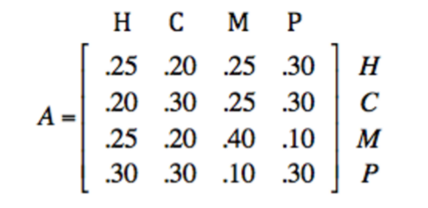
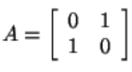
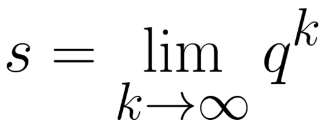

Markov Chains
Text by Esther Cao, Ayush Gupta, and Vivian Young
Design by Vivian Young
Test your knowledge of Markov Chains with this quiz!
History
Markov chains are named after their creator, Andrey Markov. They are mathematical
systems that anticipate future events from a current state. Markov initially designed Markov chains in order
to analyze the frequencies of vowels and consonants in the novel Eugene Onegin.
What is a Markov Chain?

Markov Chains have a set of distinct states. They can be used to interpret and understand intricate, real-life processes.
A fundamental aspect of Markov chains is its tendency to anticipate future states based on only its previous state.
In other words, the outcomes of trials in the Markov Chains are dependent only on the outcome of the previous state. There can only be one state at a time. Each
state gives a probability distribution of different events occuring. Because of this, more complex tasks are simplified and take into account a conditional probability
instead of programs that involve countless of past scenarios.
Properties of Markov Chains
- At any time, each object is at exactly one state
- Objects move between states according to transition probabilities (based on current state)
- Transition probabilities remain constant
Example Problem
A large city consumes solely Red Vines and Twizzlers. One of these candy companies wants to hold a larger share of the market and they conduct research to see which company is more successful after a disastrous FDA recall of Twizzlers and one month’s time. Currently, Red Vines owns 35% while Twizzlers owns 65% of the market share. These are some of the conclusions discovered after extensive research:
P(R → R): probability of a customer staying with Red Vines in the month = 0.8
P(R → T): probability of a customer switching from Red Vines to Twizzlers in the month = 0.2
P(T → T): probability of a customer staying with Twizzlers in the month = 0.6
P(T → R): probability of a customer switching from Twizzlers to Red Vines in the month = 0.4
To solve this problem, we need to construct an initial state matrix and multiply it by a transition matrix (which we will talk about very soon) to determine the final market shares of the two companies.

As you can see, the final state after one month is Red Vines owning 67% of the market share and Twizzlers owning 33%.
Transition Matrix
Transition matrices contain all transition probabilities from one state to another.
Properties of a Transition Matrix
- Must be a square matrix
- Elements represent probabilies, so these values must be in the range [0,1]
- The sum of all elements in a row must be 1
- Named T or P
State/Probability Vectors
For a system with n states, the state vector of a Markov chain
is a row or column vector q^k of n elements where q is the probability that the system is in the ith state after
k trials.
Properties of State Vectors
- Horizontal vector
- Same number of elements as states in the Markov chain
- Shows probability distribution of all states
- Sum of elements is 1
- Named q or x
Regular Transition Matrix
Transition matrices are considered regular if they contain all non-zero
elements. These can be used to find steady-state or equilibrium vectors.

This matrix is regular because all of its elements are positive.
Non-Regular Transition Matrix
Matrix A is not regular because any power of A still contains 0. Thus, no matrices of A contain
all positive elements.

Steady-State Vectors
After a large number of trials, the state vector remains constant. At this time, the
Markov chain has reached a stable distribution. This is called the steady-state vector
, also known as an equilibrium vector, and is represented by s or v. If A*p = A, then it is a steady-state vector.
They are independent of the original probability distribution and remain constant no matter what.

Eigenvectors and Eigenvalues
Absorbing Markov Chains
When the probability of jumping from state A to state B is 0.5, the probability
of staying at state A when it is already at state A is 1.
This is called the absorbing state, since when it gets there, it gets "absorbed". At
this point, it can no longer change to another state.
Quiz
1. Who was the creator of Markov Chains?
2. What are Markov Chains?
3. True or False? Markov Chains are unique because its states depend on the outcomes of all previous states.
4. What is one property of Markov Chains?
5. What is a Transition Matrix?
6. How do you know if a Transition Matrix is regular?
7. True or False? The eigenvector is unchanged when its transition matrix is applied to it.
8. Which of the following is the matrix equation to find the steady-state vector?
9. What would the state vector of an absorbing Markov chain (with 1 absorbing state) look like after infinite trials?
10. In what fields of study are Markov Chains used?
Check my answers!
Note: Answers will not be shown until all questions are answered.
Question 1: Sorry, the correct answer is B.
Question 2: Sorry, the correct answer is C.
Question 3: Sorry, the correct answer is D.
Question 4: Sorry, the correct answer is B.
Question 5: Sorry, the correct answer is A.
Question 6: Sorry, the correct answer is C.
Question 7: Sorry, the correct answer is B.
Question 8: Sorry, the correct answer is C.
Question 9: Sorry, the correct answer is B.
Question 10: Sorry, the correct answer is D.
You answered them all right!
Markov Chains - Ruby Code
This is a demonstration of the workings of Markov Chains, coded with the
programming language, Ruby.
To run this program, press the run button. If you would like to play around with the program, scroll to the bottom and read the green comments for help.